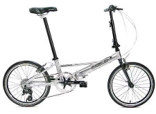
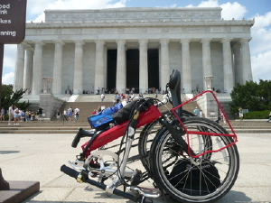
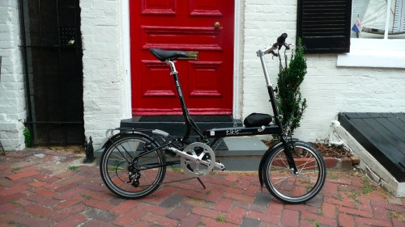
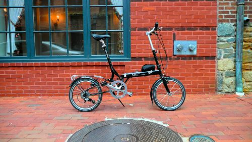
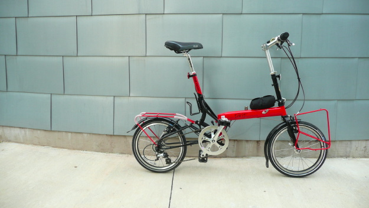

A while ago I bought two 2006 Dahon Helios P8 folding bicycles at a fire-sale price from Bikes@Vienna, the finest bike shop in Northern Virginia, to keep with friends in Italy and use there on regular visits. I needed inexpensive folding bikes to take on trains or throw in the trunk when very occasionally biking about. The Helios P8s were good bikes for the price and purpose: they are lightweight and fold adequately.
|  The Dahon Helios P8 |
After a considerable degree of unhealthily fixated research on the topic, I decided to buy a 2008 Bike Friday Tikit.
 Bike Friday is a boutique manufacturer which designs and builds its bikes entirely in Oregon, and which has a famous degree of customer loyalty and an equally famously unprofessional website. They normally make well-regarded, high-performance bikes designed to be packed in suitcases, rather than fold particularly compactly. The Tikit is their first compact folding bike.
The Tikit made quite a scene in 2007 when Bike Friday posted some videos which showed off its primary feature: a superfast fold unlike anything in the industry. It also could roll nicely while folded: it even had a special handle built-in for it. With certain exceptions, usable rolling is unusual among folding bikes. It also had the best optional slip cover around to disguise the bike: it is permanently attached to the bike and comes with a handle embedded inside when the cover is deployed.
Since then, Bike Friday has been introducing revisions to the bike to fix version-1.0 issues. An excessively stretchy two-cable folding system was replaced in 2008 with a solid, single thick cable; changes to the frame have made it stiffer and simpler; and the company has introduced the cheaper “Model T” Tikit with a less elegant fold.
For unusual reasons, I have had the chance to review not one but two Tikits in different sizes (Medium and Large) and colors (red and black). I am 5'11", which is the maximum height for the Medium and the minimum height for the Large, so in some sense I’m the worst case scenario for both! I will mostly review the Large, because it’s more fair to do so given my weight, but will include some Medium data as well. I will also often compare the size-Large Tikit to my Helios. It’s a reasonable comparison: the Helios is a good bike right smack in the mainstream of compact folders. (Note that the Helios is a discontinued model, but I have also ridden and tested its replacement, the Mu P8, as well as Dahon’s Speed P8 and Curve D3, and the results are essentially the same.)
Executive Summary
In short: it’s a great bike. You will love it. Go buy one.
For those with attention deficit disorder, here’s a quick comparison of the Tikit with my Helios. Basically: the Tikit is a more fun bike to ride and show off, and it’s one I can ride for long distances because of its geometry and fit. It’s much more cleverly conceived. But it’s almost twice the price. Are you getting what you pay for? I think so. But if Bike Friday wants to move into the mainstream folding market and change the world with this bike (their stated mission), they’ll need to reduce the price.
|
Pros (versus a Dahon Helios, Mu, or Speed (P8))
|
Cons
|
A Little Bit about Folding Bikes
Folding bikes have a history dating back over a hundred years, but only in the last thirty years has technology eliminated their primary problem: frame fragility due to the folding mechanism. Nowadays folding bikes are impressive machines, inexpensive and directly competitive with “real bikes”.
It’s hard to convince people that small-wheel bikes can be as fast or faster than standard 700c bikes. It’s counterintuitive. But they are. A Moulton AM7 holds the conventional-position 200m land speed record. Small-wheeled bikes dominate the paced upright record too. And this year despite illness Bike Friday’s Rob English did the 2008 Manayunk Wall Hill Climb in 1:35:22 on a custom Tikit, only nine seconds behind the champion 700c professional. The reason is that small wheels have less rotational inertia, and so accelerate and decelerate faster than larger wheels. They are also stiffer and have less drag. And no, smaller wheels don’t translate into “more pedaling”: it’s just an issue of gearing. They pedal exactly like larger bikes.
Instead, the primary differences you will experience with compact folders are four:
- The tall handlebar stems and seatmasts induce a small amount of flex.
- The small wheels have a somewhat harsher ride than 700c or mountain bike wheels.
- The small wheels have less momentum and thus the bike is slightly less balanced at slow speeds — very easy to get used to, a non-issue. Actually, it’s fun: more agile feeling.
- Many compact folders (not the Tikit) sacrifice riding geometry and handling for folding compactness.
The only one that’s really of concern to me is the last. And the Tikit doesn’t have it. The upsides to a folding bike (No need to lock! Just carry inside! Take on a train or put in your closet!) are well worth the other differences.
The Folding Bike Market in the United States
The U.S. market is dominated by Dahon, the Dell of folding bikes: the value leader, nothing impressive fold-wise or particularly creative, but a reasonable deal. Competing with Dahon at the budget end is DownTube, Citizen, and Giant’s Halfway. At the high end is Brompton, a British maker of elegantly compact-folding bikes; Xootr, which sells the high-performance Swift, Riese-Mueller’s excellent-riding Birdy rarity; Airnimal; and of course Bike Friday. In the “bleeding-edge” segment (some might uncharitably call it the “clown bike” segment) are the clever but unrealistic Strida, the far-too-heavy Mobiky Genius, and the unrideable A-Bike. There are lots more companies than this of course.
There are five major kinds of folding bikes sold in the US:
- Bikes that happen to fold, sort of. These are regular bikes intended to be easier to store in an apartment, and that’s about it. Examples include Dahon’s Jack, Matrix, Flo, and Cadenza; and various bikes by Montague.
- 20" wheel performance folding bikes, which emphasize biking quality over compact folding: the nice Xootr Swift; and Bike Friday’s esteemed Air Glide, New World Tourist, Pocket Rocket, and Pocket Crusoe, designed to be squeezed into airline suitcases. To this we might include the grotesquely expensive Moultons.
- 20" wheel compact folding bikes, where ride quality is less important. This is the main thrust of the budget folding market, and is mostly Dahon, which makes a wide range of models, plus DownTube, Giant, Birdy, and Airnimal. A great many models of this size (notably excepting Birdy) fold in the same unimpressive way: they fold in half down the middle, bend their handlebar stems down, and push the seatmast through the bike. These bikes begin to sacrifice bike geometry for compactness.
- 16" wheel compact folding bikes. With the exception of the Tikit, these bikes are largely intended to achieve a very compact fold. And except for the Tikit, these bikes sacrifice bike geometry as much or more than the 20" ones. The winner of the ultracompact fold is clearly Brompton, which folds into a teeny tiny package, but has all custom parts, and often ones of oddly cheap quality. Dahon makes the Curve, which folds somewhat less beautifully and compactly. Likewise for the DownTube Mini.
- “Bleeding-edge” bikes. Notably the aforementioned Strida, Mobiky, and A-Bike.
{kind=link}
{kind=link}
The Tikit is an odd fit here: it has 16" wheels but when folded it is slightly larger than 20" Dahons. I believe it is the Tikit’s 16" tires but 20"-ish girth that enable it to adjust to better bike geometry and have good handling while still fitting squarely in the “compact” range. And of course they enable its unique fold.
Folding the Tikit
The Tikit’s fold is what makes it famous.
When Bike Friday set out to design the Tikit, no doubt they were faced with a problem. Dahon has some 65% of the folding market, and has the value-oriented end of the market sewn up. The budget end is crowded with competitors. Brompton takes most of the top end of the market: its selling feature is the size of its fold: into a tiny, elegant package good for boarding British commuter trains. Bike Friday chose a different parameter to distinguish the Tikit, perhaps more apropos to U.S. folding bike use: the speed and ease of folding.
Folding speed should not be dismissed lightly. The whole point of a compact folder in the U.S. is that you can take it into the office or shops or on subways: you don’t need to leave it out to be stolen. But after repeatedly folding and unfolding my Dahons, I quickly grow tired of having to do it to enter this place or that. The Tikit folds far more rapidly, and more importantly, it folds effortlessly. How effortlessly? This effortlessly.
What makes the Tikit fold so rapidly is that it doesn’t have any latches. A quick slap on the saddle disengages the seatmast from the frame, enabling the seatmast to fold down and the frame to fold in half vertically. In so doing, the frame slackens a cable which releases a clamp, enabling you to fold the handlebar stem. Watch the previous video to see it in action. Or any of several other YouTube videos. While you’re at it, a video of Alan Scholz, Bike Friday’s co-founder, shows him more methodically manipulating the bike while explaining Bike Friday’s Tikit philosophy.
A less expensive version of the Tikit (the “Model-T”) replaces the cable clamp with a single latch on the handlebar stem: it’s still very fast to fold, though not lightning fast any more. Below is a side-by-side of folding the Tikit and the Dahon Helios P8 (typical of many Dahons, like the Mu P8 and Speed P8). Other major competitors (Brompton, DownTube, etc.) are in the same ballpark, time-wise, as Dahon.
| Folding the Tikit | Folding the Helios |
|
Takes me 5–7 Seconds (over 10 on Model-T)
|
Takes me over 30 Seconds
|
The 180-degrees bit allows the Helios to be picked up by the seat.
The difference is more pronounced when unfolding, because on the Dahon you need to adjust, and readjust, the handlebar stem, seatmast, and handlebars back to your desired position. On the Tikit, everything stays exactly as you had set it. You just shake open the bike, so to speak, and start riding.
As is shown on the video, the Tikit also can be wheeled about on its front wheel while folded: in fact, it includes a built-in handle to do exactly that. Few other folding bikes can do this in any realistic way. Strida can, and Brompton and Birdy when fitted with optional small rollers. The Tikit’s a bit heavy when wheeled folded, and it doesn’t balance all that well on one tire: but it can really do it in a useful manner, and that’s more than can be said for my Helios.
Last, the Tikit can be easily packed into a suitcase without removing its rear wheel or rear rack and in fact can tow the suitcase as well. I can just barely fit my Helios in an oversize suitcase with a lot of work.
Is the Tikit the easiest and fastest folder out there? In the category of usable compact-folder, I believe definitely so. If you broaden the field, other bikes are eligible. The Strida is certainly a contender. But the Strida isn’t a normal bike by any metric: its riding position is quite poor, it is slow, it has only a single gear, and it’s dangerous. Dahon also makes some full-sized bikes, like the Jack, which just fold in half and that’s it. The Jack won the 2008 Fast Fold Showdown (the Tikit won in 2007). But the Jack’s simplistic fold is hardly compact. A similar argument may be made of the Swift (which folds fairly fast but not as fast as the Tikit).
{kind=link}
Other Plaudits
Besides the fold, there’s other nice things to say about this bike.
Customer Service
You can call up Bike Friday and talk to people who actually build the bikes, and they improve the bike in direct response to discussion with you. They respond by email and when they can’t find you, they’ll take the initiative to look up your website and call you at your office. Trust me here. They also man, of all things, an IRC channel (#bikefriday on irc.freenode.net), a Twitter feed, and a very active mailing list. The company seems intent on upholding their reputation, both in frame quality (they have a lifetime frame warranty and 30-day guarantee) and in customer satisfaction. Compare to (for example) Dahon’s more typical bike company reputation.
Bike Friday’s customer service did some real yeoman work for me because of slip-ups in their quality control. Here’s the story. Hoping to reduce the cost, I originally bought a black pre-owned size-Large Tikit. Before shipping it to me, Bike Friday found a frame crack and replaced part of the frame. Because this delayed their ship time, Bike Friday bumped me to second-day and finally to next-day air (!). This is the bike you see in the pictures. But on receiving the bike, I found some frame problems which were probably due to the rebuild. I didn’t know what to do. But Bike Friday did: they insisted on shipping me a brand-new bike straight off the assembly line, with choice of color (I picked red), and threw in an additional front rack. But when this brand-new (and gorgeous) bike arrived... it was a size-Medium! Bike Friday again has offered to ship me a new bike, or optionally have me convert the bike to a “FrankenTikit” consisting of the Medium frame but the handlebar stem of the original Large, plus a replacement lower seatmast with thicker size-Large style tubing.
I like the FrankenTikit custom setup. I’m 5'11", exactly on the border between the Medium and the Large. At my height, the stock Medium is 19.75" from the tip of the saddle to the front edge of the handlebar. The Large is 23.5". The FrankenTikit, with the longer horizontal handlebar stem and the saddle pushed back as far as possible (0.5"), is 21.75", basically dead center between the two. And it fits me pretty well!
The Helios is 19.25". It’s too short. So are the 2008 Dahon Mu and Speed.
So in the end, I’ve wound up with a rather better bike than I originally ordered, and fairly customized for me. Go figure.
Geometry and Handling
The need for compact folding often results in handlebar stems and seatmasts which are too close together, creating an upright, uncomfortable riding geometry and odd handling, particularly for average- or above-height males (like me). The Dahons in particular have this problem because their handlebar stems fold between their wheels and thus cannot be moved forward in an “ahead” style.
As mentioned earlier, the Tikit does not have this problem, for a variety of reasons. First, it has 16" wheels but the size of a full 20" folder, meaning that it can afford to be roomier. The Tikit is custom sized (three frame sizes). And it can have ahead-style handlebars because they fold on the outside, unlike Dahons and DownTubes. As a result the stock size-Medium Tikit measures a bit longer than the Helios (a 20" bike, mind you) between the seat and handlebars, and the stock size-Large is 3.75" longer.
Bike Friday also has a long history of custom-sizing their bikes. They can increase the frame weight limit and various frame features to meet tall-person needs.
The Tikit also handles excellently: better than any other 16" or 20" bike I’ve ridden so far. Some of this is due to its sizing no doubt.
Standard Parts
Compact folding bikes often have nonstandard parts. Brompton and Strida are the worst offenders by far. Dahon also has unnecessary custom parts, notably in its handlebar stem and seatmast. Other than the frame, the Tikit has almost no custom parts. All standard components can be easily replaced.
The unusual built-in bell is a nice touch too.
Issues
Price
Yes, it’s 100% made in the USA by people paid a decent wage, rather than in China. Yes, it’s a brand-new work of design genius and Bike Friday has to recoup some of their design cost. Yes, Bike Friday is small and there are economies of scale to consider. And yes, Bike Friday’s customer service and frame warranty are astonishing. Even so: Bike Friday wants the Tikit to change how people use transportation. The Tikit is too expensive to do this.
The stock Tikit is (as of July 2008) is $1300. The stock “Model T” Tikit is $1000. The bike’s quality is worth this price. But the Tikit will not make any impact on the carbon footprint unless the bike’s entry-level cost is moved closer to the $500 sweet-spot cost for mainstream buyers. The current price may also be on the supply (wrong) side of the elasticity curve: that is, if the price was lowered, the company would likely raise its total profit due to increased sales. This is a hot bike right now, and Bike Friday would do well to try to get it in as many hands as possible quickly. If the stock Tikit were under $1000, with a kickstand, and the “Model T” were $700, this bike could really take off.
Flex
The tall handlebar stems and seatmasts on all compact folding bikes introduce some degree of flex. This isn’t a big deal, but could be improved on. For the Tikit, it’s useful to break this down a bit. Let’s start by talking about the size-Large.Handlebar Stem Flex. This is primarily an efficiency issue when pedaling hard up steep hills, when the rider tends to pull on the handlebars to help push against the pedals. The Dahon is the bike to beat here. The 2006 Dahon Helios P8 handlebar stem flexes about 0.7 inches in any direction when I put a serious amount of stress on it. The 2008 Dahon Speed measures the same. The size-Large Tikit flexes about 1 inch. This is not really a big deal in my experience, but it is clearly more than the Dahon.
Handlebar Stem Play. Many people online have confused play with flex on the Tikit. The initial (2007) version of the bike used two brake cables to hold the handlebar stem clamp tight. This was insufficient: the clamp easily developed a lot of play. The revised (2008) version has replaced them with a single large cable and a larger clamp, and now this issue is gone. Do not buy a 2007 Tikit unless it has been upgraded to the new cable design.
Seatmast Flex. Some small seatmast flex isn’t an issue: in fact I think it’s desirable in a compact folder as it softens the bumps a bit. The Dahons and size-Large Tikit flex about the same amount, which isn’t much.
The size-Medium Tikit. I am the worst-case scenario for the Medium: 5'11", and over the weight limit: so this is not exactly fair. But the seatmast is overly bouncy under my weight than the Large, and the Medium handlebar stem flexes more. This is because the tube walls are thinner. The seatmast tube (the part where it says “Bike Friday”) is 0.040" on the Medium vs. 0.055" on the Large. The lower handlebar stem (the colored part) is 0.050" vs. 0.065". The upper handlebar stem (the silver part) is 0.065" vs. a whopping 0.100"! On my FrankenTikit, where I have inserted the upper handlebar stem of the Large into the Medium, the handlebar flex difference has largely gone away.
A more reasonable, lighter, shorter rider will find much less flex in the Medium in the seatmast and somewhat less in the handlebar stem. Even so, Bike Friday really ought to make the tubing consistent over sizes. The bikes already cost the same, and the weight difference is also only one pound. And if they used thicker wall tubing in the Medium, at least in the handlebar stem and seatmast, it’d improve its flex a lot. And it would be cheaper to manufacture: fewer differences among models.
Ride
In their review, AtoB Magazine said “We’d go as far as to say that the ride and handling is the best we’ve seen with this wheel size.” Well, sort of. True, the Tikit’s handling is first rate compared to other 16" bikes 20" bikes, and that’s a big deal. But its ride is a little harsh.
It’s not unexpected. Small wheels create a harsher ride than large wheels. 20" wheels are harsh: 16" wheels are harsher still. Various compact folders (such as the 16" Brompton) compensate for this by adding rear or full suspension. Others (such as the 16" Dahon Curve) add huge Schwalbe Big Apple Tires which soften the ride a bit. The Tikit cannot be fitted with Big Apples and has no suspension: but it does have a steel frame which is more forgiving than the aluminum found in many other folders, and it sports a very soft Cloud 9 saddle. Even so, compared to my 20" (but aluminum) Helios, my size-Large Tikit’s ride is still somewhat harsher. I do not mind it. But you wanted more smoothness still, you could throw on a high-grade suspension seatpost. In the far future, Bike Friday might consider designing in a rear suspension option; given how the seat latches to the frame, it’d not be that hard to do.
The ride also affects the hands a lot. The stock grips are made of thin, too-easily-compressed foam and my hands quickly get tired holding them. They definitely should be replaced with thicker, more shock-absorbant grips.
The size-Medium Tikit. The Medium ride is milder than the Large mostly because the seatmast tubing is thinner and more flexible: but that’s not a good tradeoff, since as mentioned before, it creates too springy a ride for a heavy rider like myself.
Gearing
The Tikit has a fairly slow high gear. The front chainring has 53 teeth and the cassette is 11 to 28 teeth resulting in, I am told, a gear-inch range of 31.2"–79.5". I find 79.5" too slow when exercising on flat stretches.
16" wheels require an unusually large front chainring to gear them well. 20" bikes have it a bit easier: the Helios is 31"–91" and the Mu is 32"–93", both using a fairly common (11 to 32 teeth) cassette range. Employing an internal hub gear rather than a cassette, the 16" Dahon Curve SL is 38"–85", sacrificing some low-end but a bit faster up top.
One way to fix this is to use a Capreo rear cassette designed for small wheels. With the current front chainring, this would yield, I believe, 32.8"–94.6", which would be really great. A less expensive alternative would be to use a larger chainring (60 teeth maybe?) and a cheaper 9-speed 11–32 cassette to maintain the low-end, giving about 30.1"–87.7". Bike Friday offers the Capreo on their special-order Express Tikit, but for over $200 more. It’s possible that more high-end is also achievable with the SRAM DualDrive internal hub / cassette combination. This is also available special order on the Travel Tikit, for over $100 more. Some kind of faster gearing solution ought to be stock, not special order.
Nitpicks and Suggestions
And now some nitpicks. None is a big deal, but it’s worthwhile to know them (and, I hope, for Bike Friday to consider them).
The (Aluminum) Dahon Helios P8 weighs about 23.5 pounds. Dahon’s ultralight Mu SL is 19.5 pounds. A basic size-Large (Steel) Tikit, without fenders, weighs in at about 25.5 pounds. My Tikit, outfitted nicely with a rear rack, fenders, kickstand, and a transit cover, is 26.5 pounds. It’d be nice to have this trimmed, though the trade-off is minor.
The optional Tikit rear rack does not support panniers (one exception). There’s no way to attach their lower hooks to it. I understand that the rack’s height is too low for most panniers; and that in most cases pedaling would kick into them anyway. But it’d have been nice to have the option. Two small braze-on hooks on the frame, pointing outwards, would have been most welcome.
The stock handlebars are too short. They should be an inch longer on each end.
The Tikit is not particularly compact: that’s a tradeoff. Bike Friday describes its maximum extent as 25", but I believe that’s for the size-Small; for my size-Large, it’s 28". My Tikit about three inches longer than my Helios. It’s wider as well, largely due to the ahead-style handlebars. There are clear places where the tikit could have been folded more compactly — the most obvious choice is to allow the front wheel to optionally rotate back in a manner similar to the Birdy. I believe the rotational axis for the rear of the bike could have also been moved forward somewhat without sacrificing the ability to roll on the front wheel when folded. Note: the Tikit folds not into a rectangle but into an odd wedge shape, and so comparing the size of its bounding box makes little sense. Still, I was quite concerned that the size-Large would not fit in my coat closet when it arrived (it did). Not surprisingly, the size-Medium is about an inch and a half shorter.
The size-Large Tikit has certain minor problems other sizes don’t have. The slip cover is tighter than it ought to be. When fitted for a 5'11" person (the smallest for a size-Large), the point of the saddle impacts directly on the derailleur cable when folded, stressing it: this could have been remedied with a very slightly higher seatmast locking tab hole position (a trivial change). The handlebars on a size-Large have height limits before they start touching the ground when folded. This could have been fixed by changing where the handlebar stem locks to the frame. The seatmast base is a bit too tall: as a result, the Cane Creek Thudbuster ST, one of the best suspension posts, probably won’t fit in the available space under the saddle for a 5'11" person.
If you get the bike direct, it’s fairly easy to assemble but is shipped without any tools. You’ll need an Allen key and a wrench. Assembly materials ought to have been included, IKEA-style.
The stock models should be offered in a wider range of colors than just blue and black. The red is particularly impressive looking (believe me).
Other Reviews and Stuff
- AtoB Magazine reviewed the Tikit favorably.
- The Folding Society also liked the Tikit.
- Supposedly VeloVision (issue 28) liked it too, but it’s impossible to tell on the web.
- Sightline has an article on the Tikit.
- Mechanical Engineering Magazine did an article on the Tikit’s mechanical design. If the link is broken, try here.
- Vikram Kumar Banjerjee maintains a fan blog of the Tikit on two sites (pre-2009 and post-2009, search for 'tikit') with extensive information and lots and lots of pictures. Vik also started the Tikit Talk Google Group.
- Alex Wetmore’s blog discusses his Tikit and customizations he’s made to it.
- So does “Martin”.
- Love The Fold details life with the Tikit and other folding bikes.
- Anatoly Ivanov compared the Tikit with the Brompton. The Tikit was found superior in every way except folded size. He still picked the Brompton: folded size was paramount to him.
- Gareth Dent blogs about his Tikit.
- Daniel Valente talks about upgrading his brand-new Model T.
- Lee Lloyd compares his Mobiky Genius with the tikit and winds up with an essay on engineers versus designers. He argues that the Genius was clearly design-driven, and the tikit was engineered. He's a designer, but prefers an engineered bike.
To Travel is Better than to Arrive details experiences with the tikit and other bikes.
- Bicycling Magazine did an essay on life with a tikit in New York.
- BikeForums maintains a Folding Bikes forum with lots of useful Tikit (and other bike) information.
- ArchiTakes, a blog about New York architecture, has a first-rate comparison of various 16-inch folders: the Tikit, Brompton, Strida, Dahon Curve, and Mezzo, including history and culural context.
- Bike Friday’s Walter Lapchynski maintains a blog and the Bike Friday IRC channel.
- Bike Friday’s gonzo sales evangelist, Lynette Chiang (“GalFromDownUnder”), did a video series of sneaking the Tikit into various places in New York. Of particular interest is the first video, in which David Lam, proprietor of New York’s bfold bike shop, discusses why he likes the Tikit.
- The Bike Friday “Yak” mailing list archives have a lot of useful material.
In addition to the aforementioned Tikit Talk Google Group, there is also the tikit Yahoo! Group.
- Last but not least, Yehuda Moon featured the Tikit.
Conclusion and Buying Advice
|  The FrankenTikit, All Decked Out |
Yes, it’s a bit more expensive than it should be, and its ride is a little harsh, and the Medium (not the Large) has too much flex, and its gearing could be higher... but geez, it’s a very impressive bike from a very impressive company which does whatever is necessary to keep its customers happy. It’s a ton of fun to ride, garnering looks left and right and enabling a tremendous degree of freedom compared to my mountain bike. The ultrafast fold is liberating.
I am very glad I bought one. I really enjoy riding this bike.
If you buy a Tikit, definitely consider the attachable slipcover, the rear rack (which also makes the bike more stable when folded), and a kickstand. If you get an older model, get a new saddle — the early saddles are poor — and if you get a hyperfold make sure it has been upgraded to the new one-cable mechanism. Bike Friday has dealers in many U.S. locations. In Washington D.C. alone, there’s three: Mt. Airy, College Park Bicycles, and my local favorite, Bikes@Vienna. In New York, try bfold among others. In Philly, try Trophy Bikes.
If you can’t work with a dealer, don’t be afraid to buy from Bike Friday directly. They are unusually responsive. They sell stock and pre-owned Tikits and Model-T Tikits, as well as a number of build-to-order versions.
And yes, while I own a Tikit (courting owner’s fanboy bias), this review was unsolicited.
For more pictures, see the pictures page.
And be sure to catch my four-month update to this review.